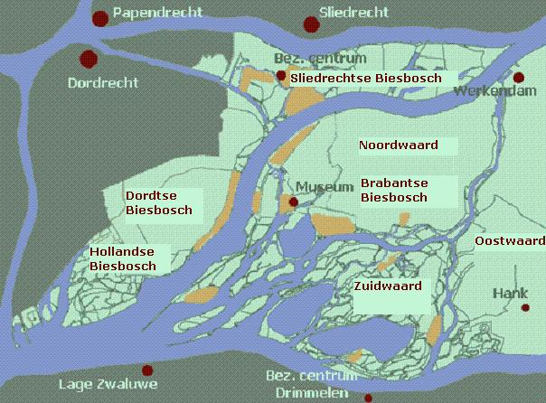
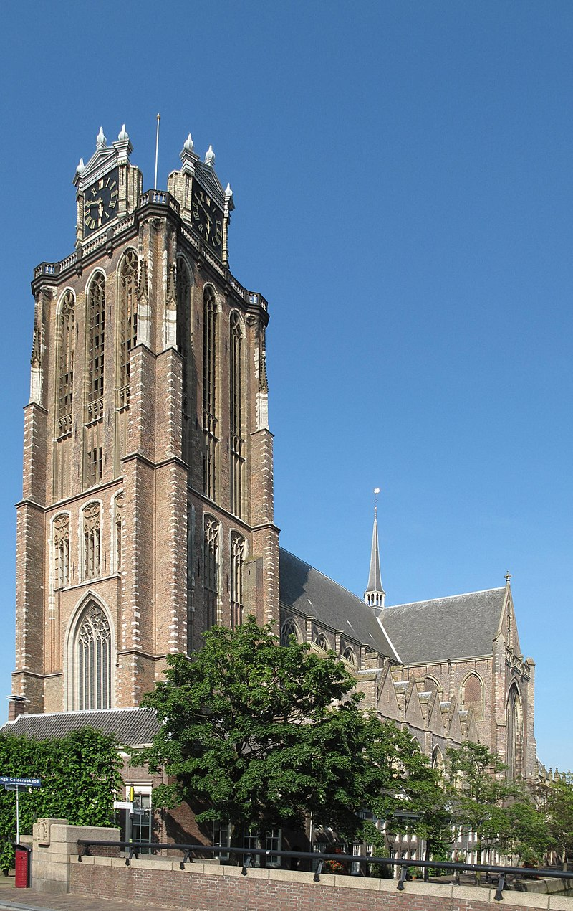

| Feit nr | Beschrijving |
|---|---|
| #1 | De grote kerk van Dordrecht staat scheef |
| #2 | Dordrecht de oudste stad van Holland is |
| #3 | De grote kerk bevat 275 traptreden om naar de top te komen |
| #4 | In Zuid-Afrika ook een stad is die Dordrecht heet |
| #5 | Het drierivierenpunt het drukst bevaren knooppunt is in heel Europa |
| Attractie 1 | Oppervlakte | Beheer | Afbeelding |
|---|---|---|---|
| Biesbosch | 10 km2 | Staatsbosbeheer |  |
| Attractie 2 | Hoogte | Gebouwd tot | Monumentale status | Afbeelding |
|---|---|---|---|---|
| Grote kerk Dordrecht | 65 m | 1470 | Rijksmonument |  |